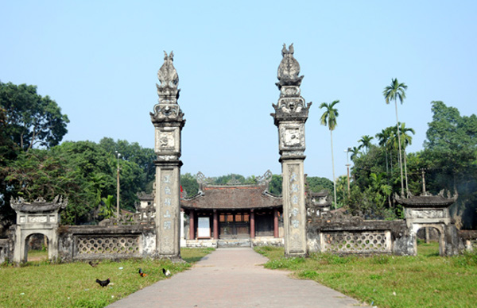
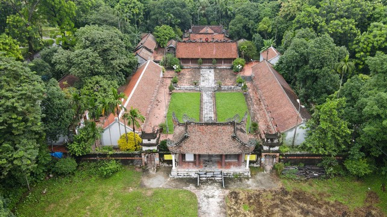
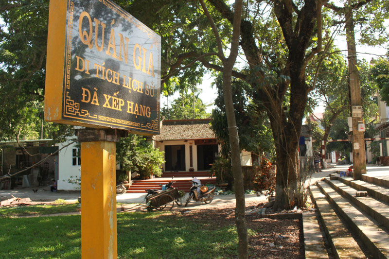
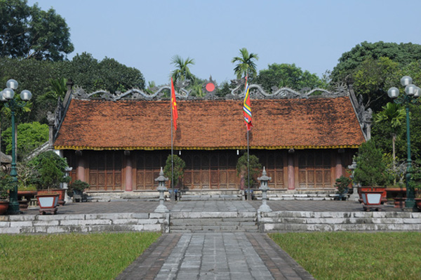
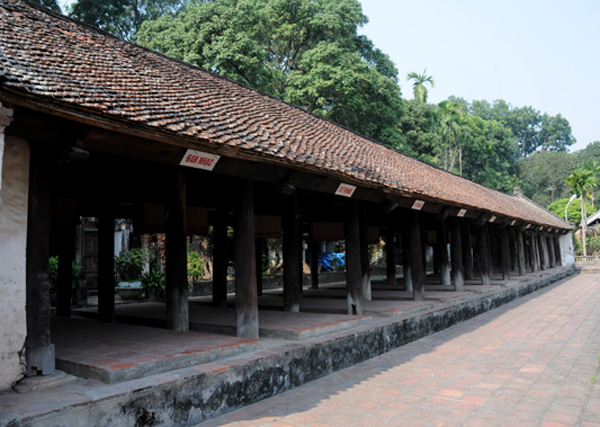
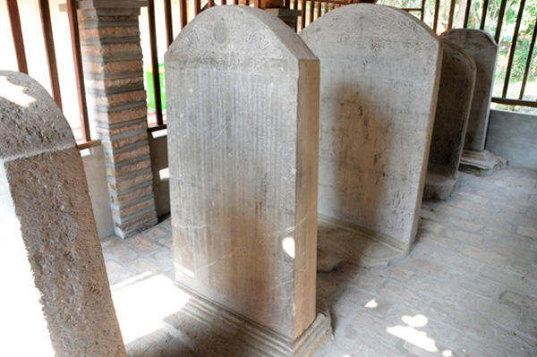
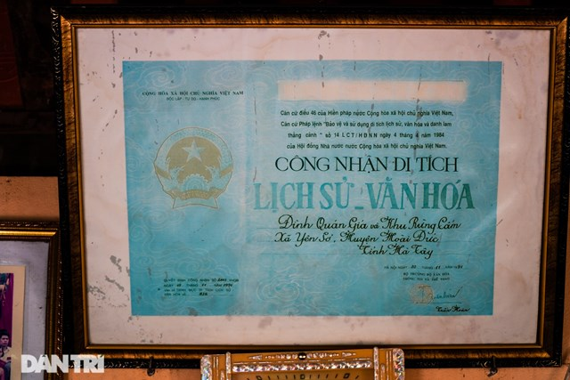

Đình Quán Giá nhìn từ bên ngoài

Theo truyền thuyết, đình được xây dựng lần đầu tiên vào thời Lý Thái Tổ (1010 - 1026). Đình thờ Lý Phục Man, một danh tướng của Lý Bí, sống ở thế kỷ thứ VI, quê ông ở làng Cổ Sở (huyện Hoài Đức), không rõ họ tên thật. Tương truyền, ông giỏi võ nghệ, theo Lý Bí khởi nghĩa chống quân Lương (Trung Hoa) xâm chiếm nước ta, lập nhiều chiến công.
Nhà Tiền Lý (544-555) thành lập, ông được cử trông coi vùng đất phía Nam, đánh tan cuộc xâm lấn của Chăm pa. Sau đó, ông kết hôn với công chúa Lý Nương, vua ban cho ông họ Lý và chức thiếu úy, gọi là tướng quân Lý Phục Man. Ông trở về quản lĩnh vùng đất Đỗ Động, Đường Lâm.

Nhà Lương lại đưa quân sang xâm lược nước Vạn Xuân. Ông chỉ huy quân sĩ đánh giặc và hi sinh ở chiến trường. Thương nhớ và biết ơn ông, nhân dân ở nhiều nơi như Yên Sở (Hoài Đức), Xuân Đỉnh (Từ Liêm)… dựng đền, đình thờ Lý Phục Man.
Năm 1947, giặc Pháp đã đốt phá gần hết Quán Giá, chỉ còn lại hai tam quan, ba bức tường và hậu cung. Sau này, trên nền cũ, nhân dân địa phương đã dựng lại cả ba nhà đại đình, trung đình và thượng điện, tuy có nhỏ hơn trước song vẫn bảo đảm sự thờ cúng trang nghiêm.
Tòa thượng điện vẫn còn bức tường hồi xây từ thời Nguyễn có các ô hình trang trí và cột trụ phía trước có đắp nghê trên đỉnh cột như một sự kiểm soát người vào quán lễ thánh.
Bên cạnh khu đền chính, phía hồi phải có nhà bia và nhà ở của tuần canh (thời xưa), phía hồi trái có dãy nhà để ngựa và nhà bếp phục vụ cho sinh hoạt lễ hội. Lại thêm vườn hoa, cây cảnh, hòn non bộ ở đằng sau, tạo thành một cảnh quan cổ kính, trang nhã.

Kiến trúc tòa Thượng điện
Hai bên sân trong là nhà tả, hữu mạc rất dài, mỗi dãy nhà ngang đó chia thành 11 gian dành cho những nhóm người dự hội. Nhà ngang cũng là nơi để các bậc chức sắc, cao niên trong xã gặp nhau bàn bạc vào dịp diễn ra các lễ hội hoặc sự kiện lớn.


Năm tấm bia đá niên đại thuộc các năm 1620, 1671, 1681, 1728 và 1803
Trải qua 17 lần trùng tu và tôn tạo, đình Quán Giá đã trở thành một địa chỉ văn hóa tâm linh và du lịch với cảnh quan đẹp có tiếng của Hà Nội. Đình được xây dựng theo hình chữ “Công” cổ, có lối kiến trúc của cung điện nhà vua, rất hiếm có ngôi đình nào có được kiến trúc này. Đình Quán giá bao gồm đền Thượng, đền Trung và đền Hạ.

Chúc bạn có chuyến đi vui vẻ